This package provides functions to help with the step-by-step DGBD modeling process. The guide will take you through each stage, explaining each function’s purpose and how to customize the analysis to fit your specific needs.
BC_rank()
The BC_rank function imports frequency data from a
specified data frame in your workspace and ranks it. You need to specify
the column parameter, which indicates the column containing
the data you want to analyze. Once the ranking process is complete, the
column is automatically labeled as abundance, relieving you of the
manual task and ensuring smooth processing in subsequent stages.
library(DGBD)
BC_rank(df_abundance=DGBD::Weblinks, column=2)
#We can also refer to the column by name
BC_rank(df_abundance=DGBD::Weblinks, column="frequency")Because the starting data is further analyzed with logarithms, any 0 or negative data points are automatically discarded. Sometimes, it might be useful to exclude other values. The “rank_threshold” argument keeps only data points higher than the threshold.
BC_rank(df_abundance=DGBD::Weblinks, column=2, rank_threshold=5) #In this example, all data points equal to or lesser than 5 will be discarded.The BC_rank function supports ‘phyloseq’ objects with the argument is_phyloseq=T
BC_param()
The BC_param function imports results from the
BC_rank function and includes them in the model formula. It
adds two new columns to the data frame, labeled as
pre_numerator and pre_denominator. These
columns are then transformed using logarithms to build a linear model to
estimate the parameters ‘A,’ ‘a,’ and ‘b.’ The output of this function
is the linearized parameters, which are then prepared for reporting.
#BC_param will call BC_rank, and then go through the described process.
BC_param(df_abundance=DGBD::Weblinks, column=2)
#All the options available for BC_rank can be used in BC_param.
BC_param(df_abundance=DGBD::Weblinks, column=2, rank_threshold=3)
#We can modify the confidence interval of our predictions to values between 0 and 1.
BC_param(df_abundance=DGBD::Weblinks, column=2, confidence_interval=0.99)
#The values we obtained from the linear model can be used as a "seed" to calculate a non linear approximation of the parameters.
#The gslnls package can be called by adding the "nls=TRUE" argument
BC_param(df_abundance=DGBD::Weblinks, column=2, rank_threshold=3, nls=TRUE)
#When using nls=TRUE, the arguments "nls_algo" and "nls_control" are exposed as the "algorithm" and "control" arguments of the gsl_nls() function.
BC_param(df_abundance=DGBD::Weblinks, column=2, nls=TRUE, nls_algo="dogleg",nls_control=list(maxiter=70, scale="levenberg"))
#There also exists the option to "loop back" the nls estimation process using the generated values as seeds. It generally doesn't improve results, so changing the nls_algo and nls_control arguments is recommmended instead. Loop=1 means no looping.
BC_param(df_abundance=DGBD::Weblinks, column=2, nls=TRUE, nls_loop=3)As BC_param() calls BC_rank(), whenever an error occurs it can be difficult to know where it lies. It could be within either process, and could be a result of using a particular R object as df_abundance (for example, providing a tibble instead of a data frame, or a column storing strings instead of numeric values). This problems grows in the latter functions, so most functions are provided a “BC_x_object” argument. This argument can be used instead of an abundance data frame and skips the call to earlier functions, so if the error persists, we know it lies within the current call. As an example:
#We will intentionally cause an error within BC_rank, as we call a phyloseq object without the proper arguments. However, this particular BC_param() call might be hard to debug because we have included many arguments which could be the cause of the error.
BC_param(df_abundance=DGBD::Tara_Data, column=2, rank_threshold=3, nls=TRUE, nls_algo="dogleg",nls_control=list(maxiter=70, scale="levenberg"),confidence_interval=0.99)
#> Loading required package: phyloseq
#> Error in df_abundance[1, column]: object of type 'S4' is not subsettable
#Therefore, we can produce a BC_rank() result with another object, and then use it for this BC_param() call.
test <- BC_rank(df_abundance=DGBD::Weblinks, column=2,rank_threshold=3)
BC_param( nls=TRUE, nls_algo="dogleg",nls_control=list(maxiter=70, scale="levenberg"),confidence_interval=0.99, BC_rank_object=test) #As the error no longer appears, we know that this is a valid BC_param() call. Therefore, the error ocurrs in an earlier function.
#Notice that we had to move the rank_threshold argument to the BC_rank call, in order to imitate the original call's process.
#In the event that neither earlier functions called with the corresponding arguments or the BC_x_object call show errors, the problem could lie within the interaction of the current call and the specific data set.BC_model()
BC_model() requests the parameters and ranking data (our independent variable) from BC_param(). It then predicts the abundance values (the dependent variable). Any non greater than 0 prediction is replaced by .Machine$double.eps. in order to proceed with the plotting. This can be seen as a sharp bend in the plot. In that case, all stat values such as the MSE are not valid, and a different rank_threshold value should be used or the data set isn’t approximated by a DGBD. BC_model() builds a handy function too, that given a rank, predicts an abundance value. This can be useful to predict mid values, or a bigger ranking (i. e. a ranking=26 not seen data point in a 25 point data set).
BC_plot()
BC_plot()‘s main function is generating a visualization of our model. It uses the ’ggplot2’ package. BC_plot() outputs a list that contains much of the data processing steps, which can be of interest.

#Previous functions arguments can be used
BC_plot(df_abundance=DGBD::Weblinks, column=2, rank_threshold=4, confidence_interval=0.985)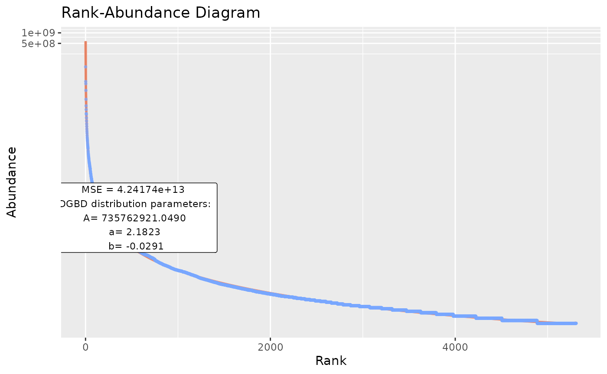
#When working in a script, sometimes it might be desirable not send the plot as an output to the graphical device.
temp <- BC_plot(df_abundance=DGBD::Weblinks, column=2, plot_silent=T)
#The function has a range of arguments that allows customizing our visualization.
#"obs" arguments change how the observed data points look.
BC_plot(df_abundance=DGBD::Weblinks, column=2,obs=TRUE,obs_shape=4,obs_col="#aa9fff",obs_size=3)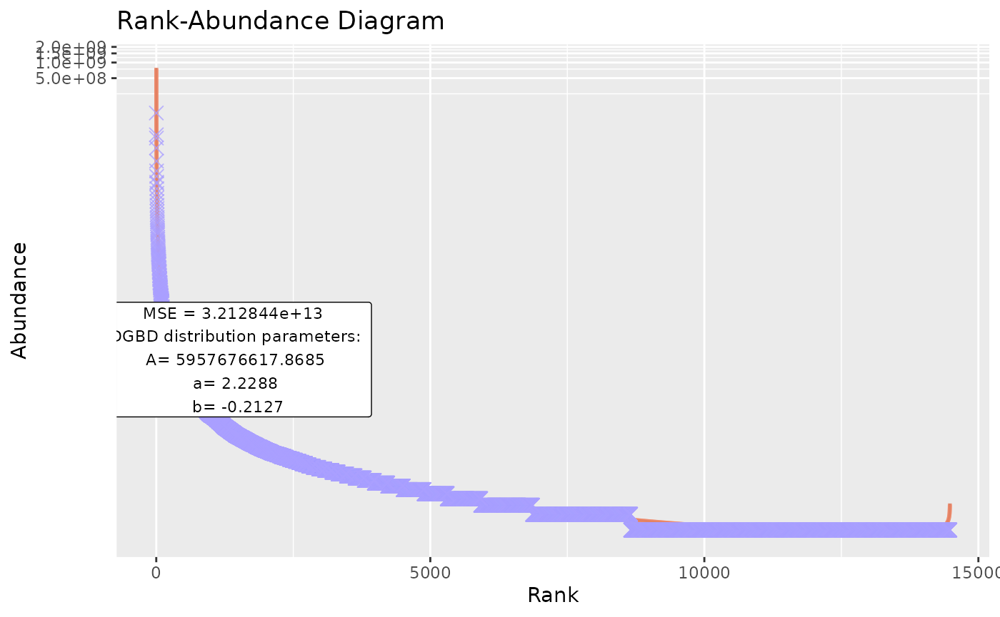
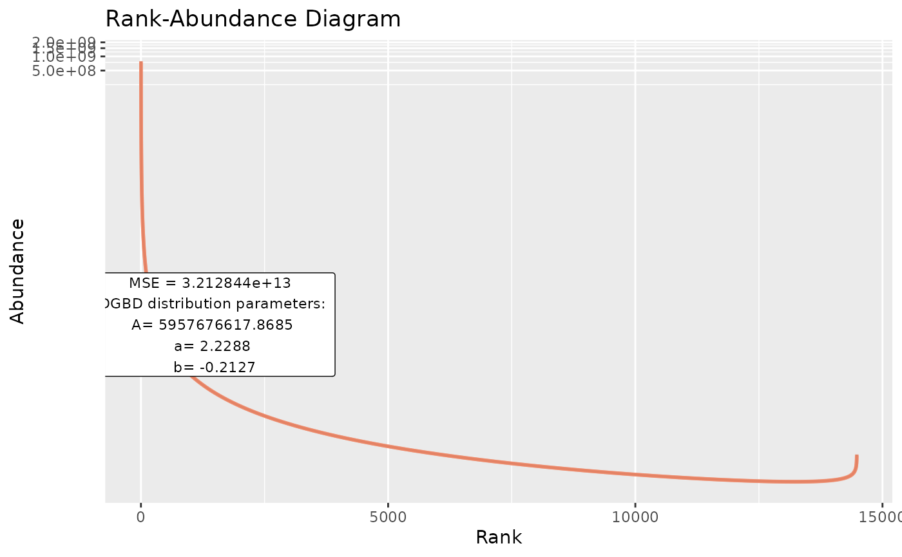
#"model" arguments change the predicted values line.
BC_plot(df_abundance=DGBD::Weblinks, column=2, model=TRUE,model_col="#aaff00",model_width=2)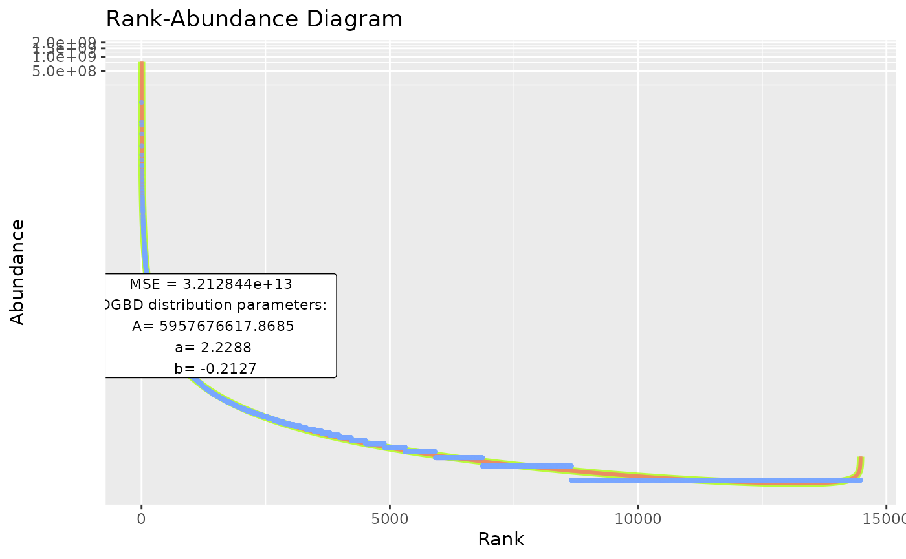
#"model_extra" changes the error measurement to compare different fits. The "R2" measurement is not recommended for non-linear relationships (DGBD's are linear only when a=b=1)
BC_plot(df_abundance=DGBD::Weblinks, column=2, model_extra="S")
#"confint" arguments change the appearance of the confidence intervals, and the confidence interval range (which you might not want to plot, as it alters the color of the model line).
BC_plot(df_abundance=DGBD::Weblinks, column=2, confint=TRUE,confint_col="#018666",confint_width=0.5,confrange=TRUE,confrange_col="#ffff78")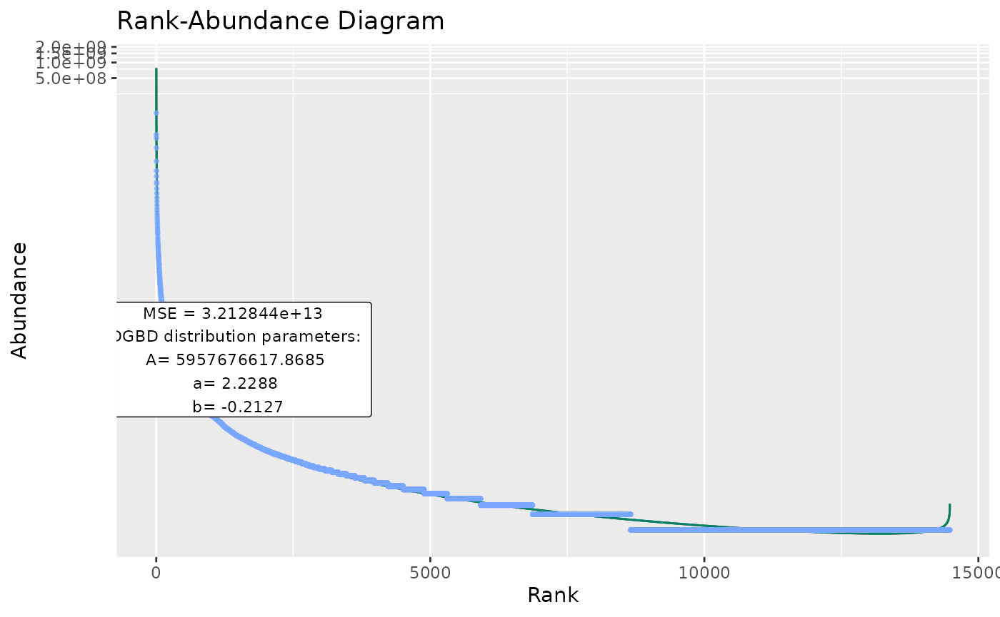
#"gfx" arguments changes other elements of the graph, such as the alpha of all objects, the title, whether to plot a label or not, where, the scales and the background color
BC_plot(df_abundance=DGBD::Weblinks, column=2,gfx_alpha=0.9,gfx_title="My Graph",gfx_label=TRUE,gfx_label_coords=c(15,15),gfx_xy_trans=c("log10","log10"),gfx_theme=ggplot2::theme_bw())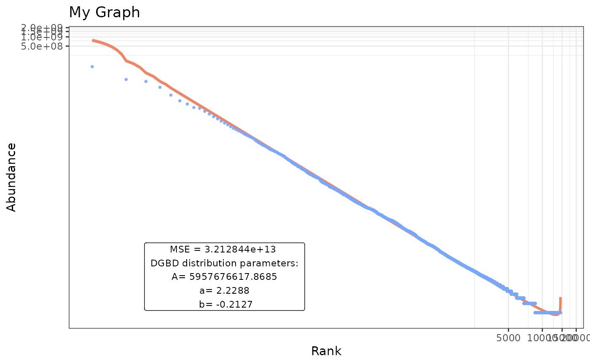
BC_report()
BC_report() doesn’t continue the data processing steps. Instead, it discards most previous “middle” information and just formats a quick minimal summary of the DGBD model.

#If desirable, we can force silent outputs (not print to console or graphical devices)
BC_report(BC_plot_object=temp,show_plot=FALSE,show_stats=FALSE) #Notice the BC_x_object substitution. When the DGBD analysis takes too long (which could happen if the data frame is big). Calling BC_report() means calling all other functions from BC_rank() and redoing everything. BC_x_object substitution avoids spending computer resources in the same task.BC_compare()
BC_compare() takes a single dataset, but does 2 DGBD analyses. One of them is linear, and the other is non-linear. The error for both models and their model_extra data are plotted, which can help us know which model more closely follows the data, and in which regions it does so. In order to plot the error, first the absolute of the error is taken, and then 1 is added to it. After that, it is passed through log10(). abs() is used to know the magnitude of the error, and one is added so that all plotted error is non-negative. Adding 1 to the error also ensures that 0 error at that point in the model will be plotted as 0. The log10() transform is useful because the error at the left side of the model is often magnitudes bigger than the error at the right.
BC_compare(df_abundance=DGBD::Weblinks, column=2)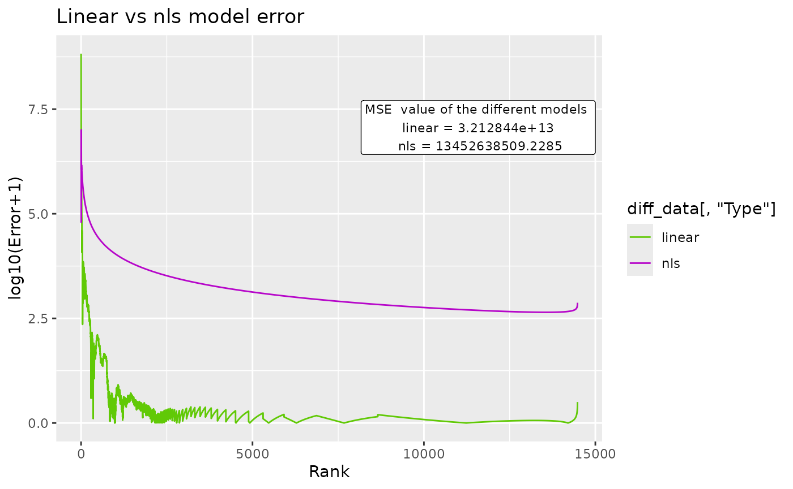
#nls arguments can be provided. Note: avoid nls=True, as that would conflict with the linear analysis.
BC_compare(df_abundance=DGBD::Weblinks, column=2, nls_algo="dogleg",nls_control=list(maxiter=70, scale="levenberg"))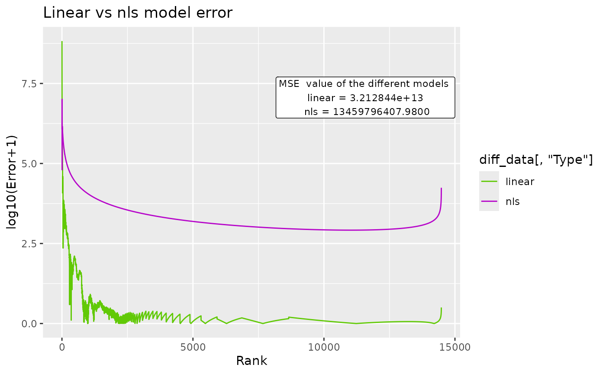
#"c_gfx" options allow changing the title and label in the graphic. The model_extra argument is particularly useful for this function.
BC_compare(df_abundance=DGBD::Weblinks, column=2, c_gfx_title="BC_comparison",c_gfx_label=TRUE, model_extra="S")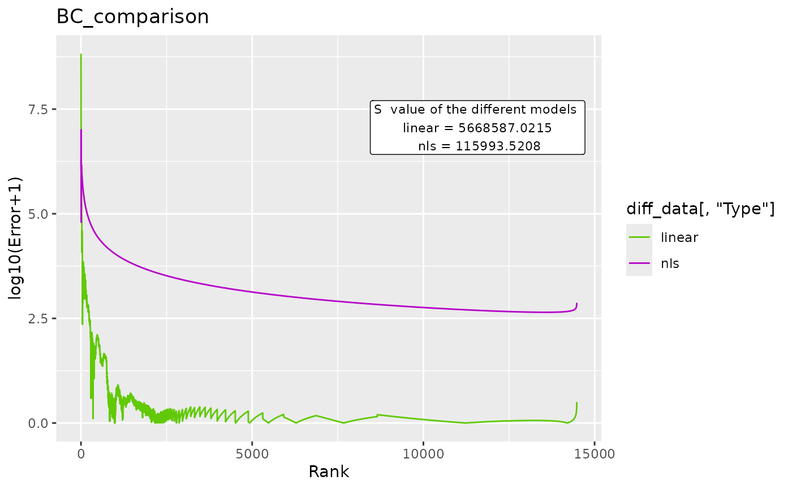
BC_multiple()
Sometimes, we have to analyze many datasets at once. BC_multiple() is capable of analyzing many datasets that are contained in a single data frame, as columns. By default, all columns are analyzed.
BC_multiple(df_abundance=DGBD::Weblinks)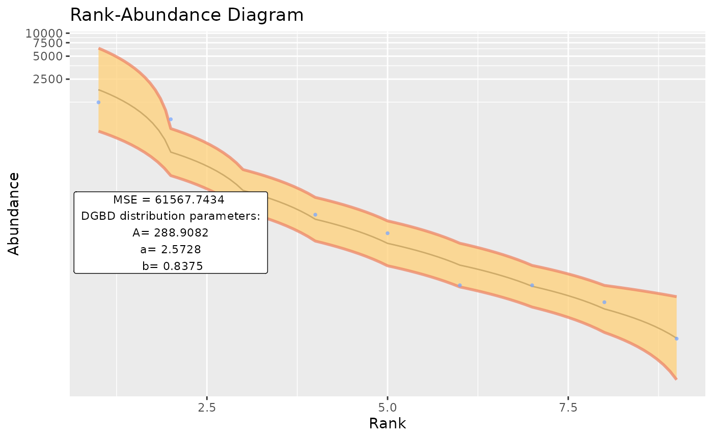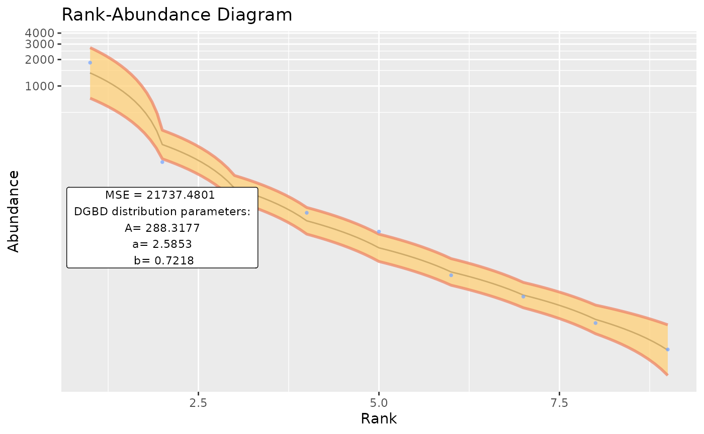
#But that would error if there is a single non-data column (like a string column).
#Therefore, they can be explicitly stated by a vector:
BC_multiple(df_abundance=DGBD::Weblinks,columns_select_multiple=c(1:2))

#is_phyloseq has to be provided when appropiate, to first analyze the dimensions of the data frame before calling each individual analysis.
#Because the function is designed to operate on many datasets, console spam is common. Therefore, by default the supress_messages=TRUE argument is provided.
BC_multiple(df_abundance=DGBD::Weblinks,supress_messages=FALSE) #Allows output.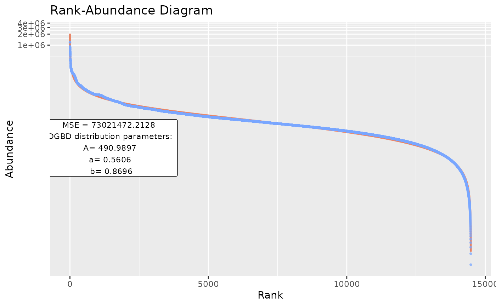
#By default, the functions output stores both a BC_plot() and a BC_summary() object per analysis, which stores duplicated data and might overwhelm the system resources.
BC_multiple(df_abundance=DGBD::Weblinks,report_only=TRUE) #Allows only storing the smaller summary object.

#In the event that the previous option still overwhelms the system, or when lengthy operations are performed (and it is desired to save progress along each step, instead of only at the end of the process), the next call is desired:
BC_multiple(df_abundance=DGBD::Weblinks, file_output_mode=TRUE) #This saves each graph as soon as it is generated. A single data frame containing the parameters is generated only at the end of the analysis. However, this method takes far less resources, as graphs aren't stored in the R environment. 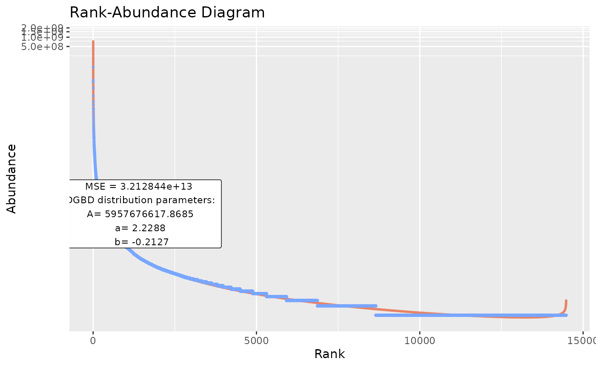
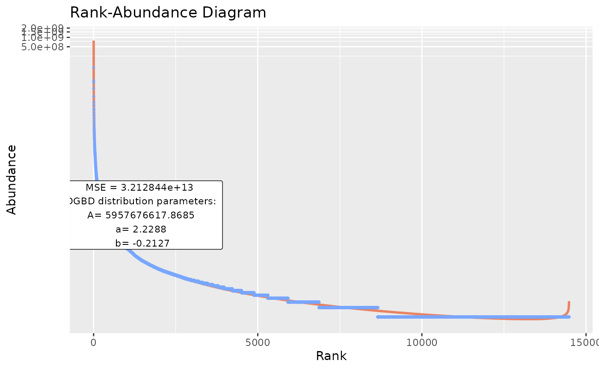
#as a WARNING: The file_output_mode=TRUE has to be done in an empty directory! If 2 file_output_mode=TRUE call's are performed on the same directory, data will be overwritten and permanently lost!BC_many()
As BC_multiple() has limitations, such as only acting on a single data frame, or having to be executed in empty directories (with file_output_mode=TRUE), BC_many() is provided. BC_many() will execute BC_multiple() on an arbitrary number of R objects or directories.
species <- data.frame(abundance1=c(3,5,45,746,42,5,1243,1,24),
abundance2=c(2,7,36,136,22,1,1843,4,54))
links <- DGBD::Weblinks
ex_names <- c("species","links") #Names or paths are provided as vectors. When providing paths to .csv files (or other files), use_paths=TRUE has to be provided as an argument for BC_many().
ex_columns <- list(c(1,2),2) #When declaring columns, a list containing a vector for each name is needed.
BC_many(object_names=ex_names, columns_many_select=ex_columns) #By default, supress_messages_many=TRUE is provided. Setting it to FALSE will allow posting the progress along to the objects to the console.


Using custom data
Data in .csv files can be easily provided for analysis. A similar method can be used for .tsv files with utils::read.table().
example_path <- system.file("extdata", "EC_Codon.csv", package = "DGBD") #This is just a string of text with the path of the .csv file
example_data <- read.csv(example_path,header=TRUE,row.names=1) #Your file might or might not have headers and row names.
BC_report(example_data, column = 1)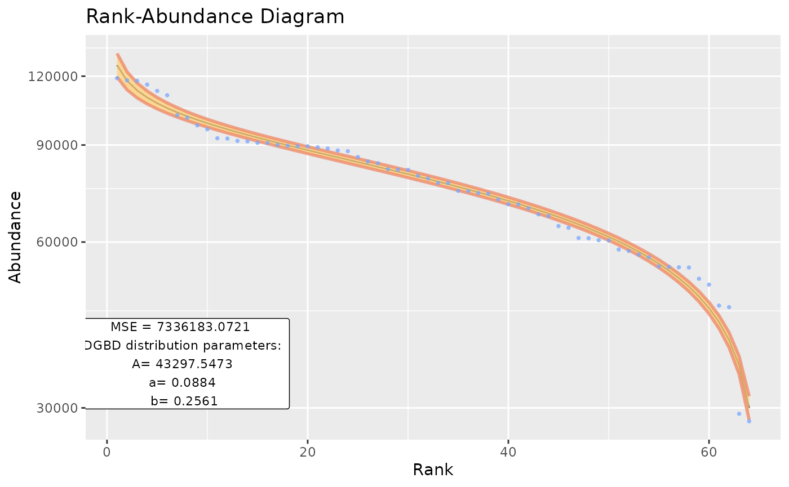